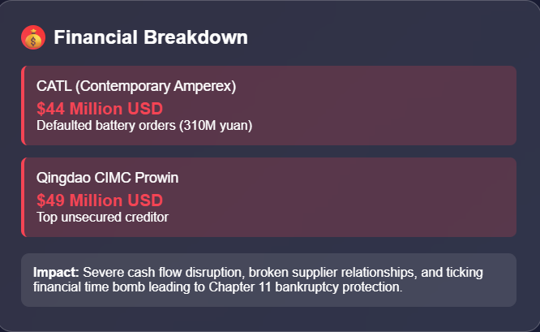
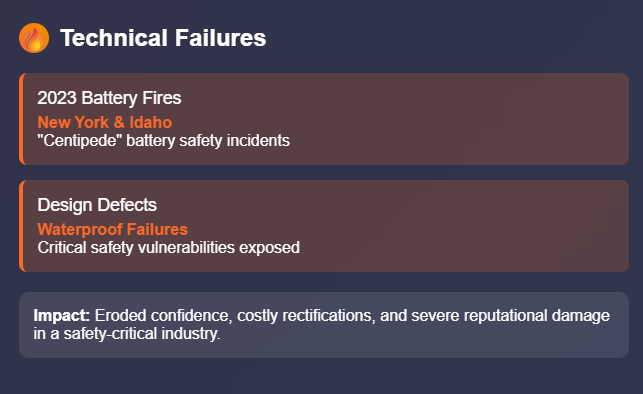
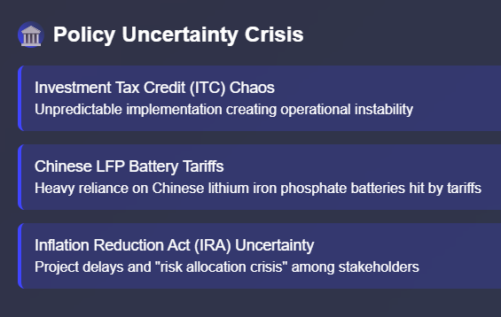
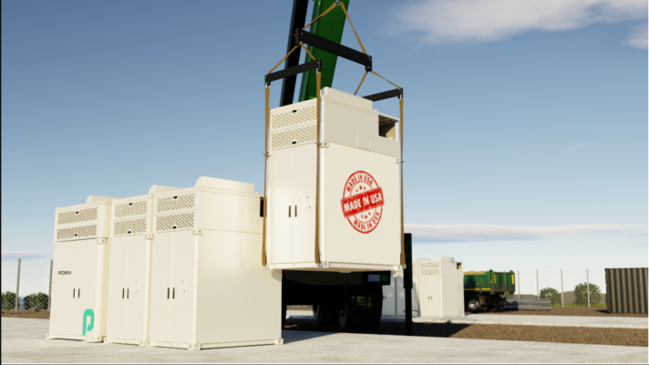
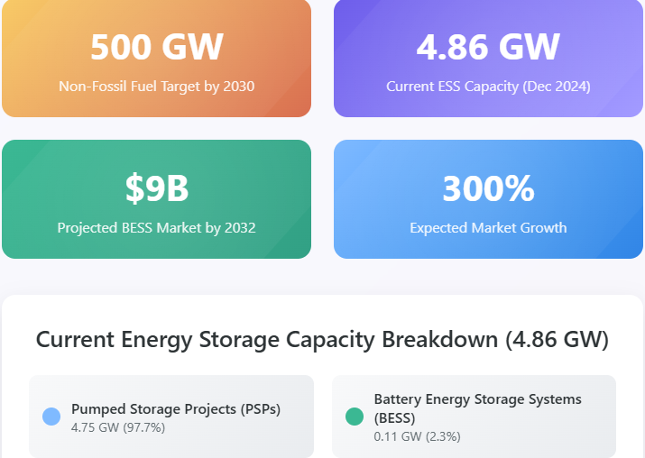
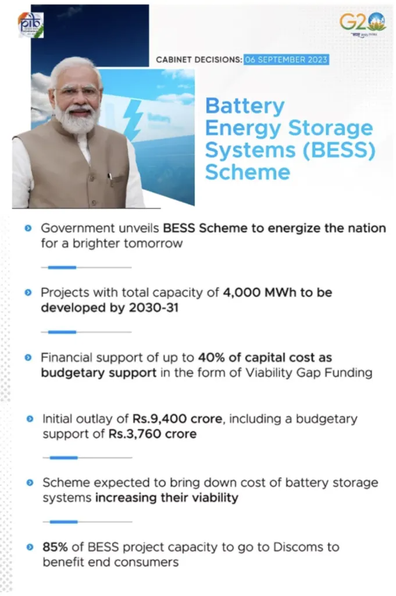
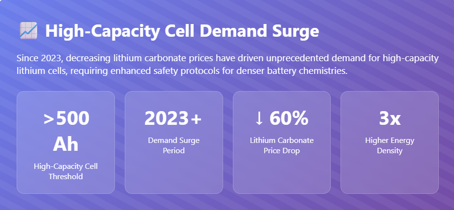
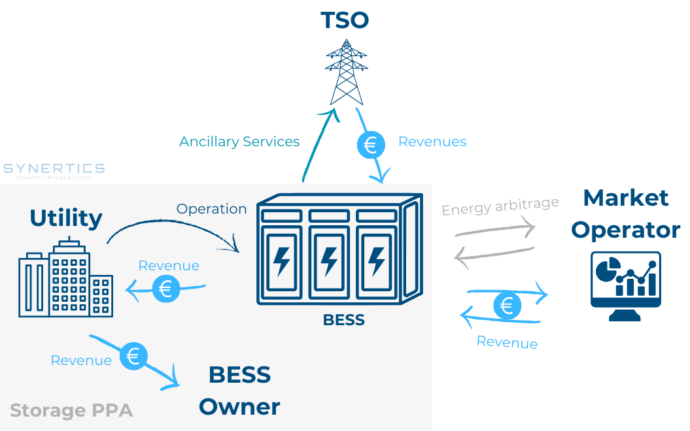

The recent crisis at Powin, an American energy storage company that once held a coveted position among the global top three in energy storage shipments, serves as a stark warning about the complexities and inherent risks within the rapidly evolving energy storage industry. Powin's submission of a layoff notice in Oregon, indicating potential termination for all 250 employees by the end of July if business conditions do not improve, is more than just a reflection of the company's internal struggles.
It powerfully illuminates a broader landscape of supply chain imbalances, policy instability, and a decline in trust currently afflicting the US domestic energy storage sector. For India, a nation aggressively pursuing its own green energy revolution, Powin's trajectory offers crucial insights and reinforces the need for strategic foresight and robust frameworks.
The Perfect Storm: Arrears, Accidents, and Policy Backlash
Powin's rapid decline is not an isolated incident but rather the culmination of three interconnected structural risks, a "triple blow" that proved devastating:
- Broken Capital Chain: A significant red flag was the accusation from a major Chinese battery supplier, CATL, alleging that Powin defaulted on orders worth approximately 310 million yuan (around $43 million USD) for the 2022-2023 period. The failure to pay for goods upon arrival created a ticking financial time bomb, severely impacting supplier relationships and cash flow. In fact, recent reports indicate that Powin has since filed for Chapter 11 bankruptcy protection, with court documents listing several Chinese companies, including CATL (owed $44 million) and Qingdao CIMC Prowin (owed $49 million), among its top unsecured creditors. This highlights the substantial financial liabilities.

2. Technical Dishonesty and Safety Concerns: The year 2023 witnessed multiple serious fires involving Powin's "Centipede" batteries in New York and Idaho. Investigations into these accidents directly pointed to critical waterproof design defects in their products. In an industry where safety is paramount and large-scale energy storage deployments carry inherent risks, such technical failures erode confidence and lead to costly rectifications and reputational damage.

3. Policy Uncertainty: The instability of US federal clean energy subsidy and tariff policies, coupled with a chaotic actual implementation path for the Investment Tax Credit (ITC) Act, created an unpredictable operating environment. Powin explicitly cited the deteriorating external environment as a key factor rendering its business model unsustainable. Tariffs, particularly on Chinese lithium iron phosphate (LFP) batteries, which are dominant in utility-scale storage and on which Powin was heavily reliant, have added significant cost and complexity. The uncertainty surrounding the Inflation Reduction Act's (IRA) incentives has also led to project delays and a "risk allocation crisis," where various stakeholders are hesitant to absorb escalating risks.

Under this severe confluence of financial distress, safety breaches, and a shifting regulatory landscape, layoffs and the specter of bankruptcy became an anticipated, rather than surprising, outcome for Powin.
Industry Enlightenment: Shattering the Myth of High Profits + High Certainty
Powin was once considered a "model for going to the United States" by many Chinese energy storage companies looking to expand globally. It maintained deep ties with companies like CIMC Group and @GCL-Poly Integration, and its battery cell supply chain reportedly encompassed eight Chinese OEM manufacturers. Powin's current predicament, entangled in payment defaults and a collapse of customer credit, offers a stark, invaluable lesson: the allure of overseas brands cannot compensate for a lack of genuine financial capability, and rigorous customer credit risk control must be established proactively.

The deeper revelation for companies operating in or looking to enter the US market is that it is far from an "ideal paradise of high profits + high certainty." Instead, it is a complex ecosystem characterized by multi-dimensional struggles involving geopolitics, legal compliance, insurance liability, community approval, and intricate tax policies. Companies that solely focus on shipment volume, neglecting the ability to collect payments, or that chase large orders without setting clear bottom-line terms, risk becoming "exporters of advance payment" – essentially financing their customers' projects.
India's Energy Storage Journey: Learning from the US Experience
India's energy sector is at a critical juncture, with ambitious targets to achieve 500 GW of non-fossil fuel-based electricity capacity by 2030. This necessitates a massive deployment of energy storage systems (ESS) to manage the intermittency of renewables like solar and wind, ensure grid stability, and provide reliable power supply.
As of December 2024, India's total ESS capacity stood at 4.86 GW, predominantly from pumped storage projects (PSPs) (4.75 GW) and a smaller but growing contribution from Battery Energy Storage Systems (BESS) (0.11 GW). The market is poised for significant growth, with projections suggesting the Indian battery energy storage system market alone could grow from approximately $3 billion USD in 2023 to over $9 billion by 2032.

Here's how Powin 's experience and the broader US energy storage market challenges offer crucial lessons and highlight opportunities for India:
1. Financial Prudence and Risk Management:
- Lesson: Powin's default on payments to suppliers underscores the critical need for robust financial due diligence and stringent credit risk assessments in all partnerships, especially those involving cross-border transactions.
- India's Context: Indian developers and system integrators, whether partnering with domestic or international battery manufacturers, must establish clear payment terms, secure financing, and implement strong contractual safeguards. The Indian government's Viability Gap Funding (VGF) scheme, which supports 4 GWh of battery energy storage capacity by 2030-31 and has already shown to reduce tariffs by approximately 40% for VGF-backed projects, helps de-risk projects financially for developers. However, project cancellations and payment delays remain challenges for standalone ESS in India, with 6.4 GW of awarded capacity already canceled due to these issues.

2. Ensuring Product Quality and Safety:
- Lesson: Powin's battery fires due to design defects highlight that safety cannot be an afterthought. As energy densities increase, rigorous testing, quality control, and adherence to international safety standards are paramount.
- India's Context: With India's diverse climatic conditions, extreme temperatures, and often challenging grid infrastructure, the safety of BESS deployments is non-negotiable. Indian companies like Exide Industries Limited and Amara Raja Group , actively venturing into lithium-ion cell manufacturing and BESS, must prioritize R&D and robust testing protocols. Adherence to global safety certifications and continuous monitoring of deployed systems are vital to build public trust and prevent catastrophic failures. The demand for high-capacity lithium cells (above 500 Ah) since 2023, driven by decreasing lithium carbonate prices, also necessitates enhanced safety measures for these denser chemistries.

3. Navigating Policy and Regulatory Landscapes:
- Lesson: The instability of US clean energy policies demonstrates that government support, while crucial, can be volatile. Companies must build resilience to policy shifts and anticipate potential changes in subsidies and tariffs.
- India's Context: India's government has shown strong intent through policies like the Energy Storage Obligation (ESO), which mandates power entities to source a percentage of renewable energy from storage-integrated projects (starting at 1% for 2023-24 and rising to 4% by 2029-30). The recent advisory on co-locating ESS with solar projects (integrating 2-hour ESS equivalent to 10% of installed solar capacity in all solar tenders) further signals commitment. However, potential fluctuations in customs duties, import restrictions, and local content requirements must be carefully monitored. India's push for domestic manufacturing through PLI schemes for ACC batteries aims to reduce reliance on imports and buffer against global supply chain disruptions and price volatility.

4. Building Resilient Supply Chains:
- Lesson: Powin's reliance on Chinese battery cell suppliers, in the face of escalating US tariffs and the push for domestic content, exposed a critical vulnerability.
- India's Context: India is heavily dependent on imported lithium-ion batteries and critical minerals like lithium and cobalt. This exposes the market to global price volatility and geopolitical risks. The establishment of domestic battery cell manufacturing by Indian players like Amara Raja and Exide, supported by government incentives, is a crucial step towards building a more resilient and localized supply chain. However, achieving self-sufficiency will take time, and diversified sourcing strategies are essential in the interim. The goal is to avoid becoming "exporters of advance payment" or subject to the whims of geopolitical tensions.
5. Holistic Market Understanding:
- Lesson: The US market's complexity, encompassing geopolitical, legal, insurance, and community approval hurdles, highlights that a successful "go-overseas" strategy requires more than just good technology or competitive pricing.
- India's Context: As India's energy storage market matures, similar multi-dimensional considerations will come into play. Community engagement, land acquisition challenges, environmental clearances, and robust legal frameworks for power purchase and storage agreements (PPSA) will be critical. Understanding the nuances of state-specific policies and regulations (e.g., Tamil Nadu's PSP Policy 2024, Madhya Pradesh's PSP scheme) will be as important as federal directives.

Conclusion: Sustainability Over Speed
Powin's fall, from being a global top 3 player to facing potential closure in just three years, serves as a profound warning from the "deep waters" of the energy storage industry. In the global race towards energy transition, while speed of deployment is undeniably important, sustainability is far more critical. This encompasses financial stability, product reliability, operational safety, and adaptability to evolving market and policy dynamics.
For Indian companies and policymakers, Powin's experience is not just an anecdote; it's a practical alarm bell regarding customer screening, project safety, and meticulous policy research. It marks a potential watershed for India's own "going overseas cycle" for its emerging energy storage players, and more importantly, for its domestic energy storage ecosystem.
While "going out" (or deploying at scale) may seem straightforward, establishing a firm, sustainable foothold is inherently more challenging. The ultimate success in standing on the high ground of "global energy storage" – and indeed, for India to truly achieve its gigawatt-scale energy storage ambitions – must hinge on three fundamental answers: robust financial models, resilient supply chain capabilities, and comprehensive risk prediction and mitigation strategies. India's ability to internalize these lessons will define its leadership in the global clean energy transition.